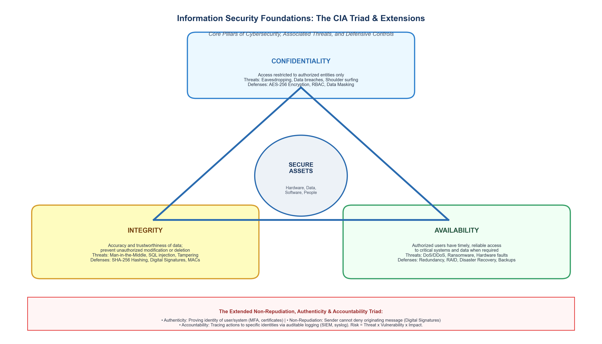
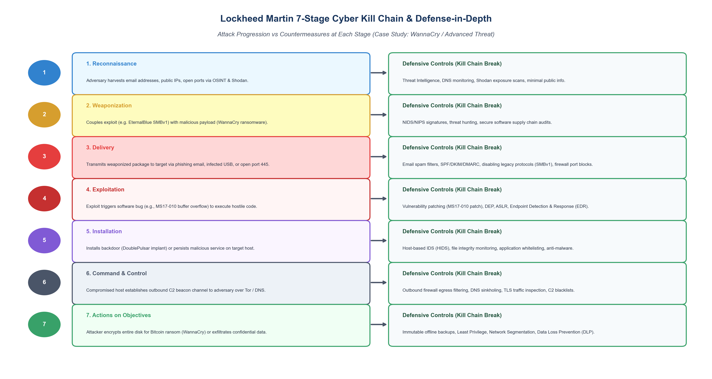
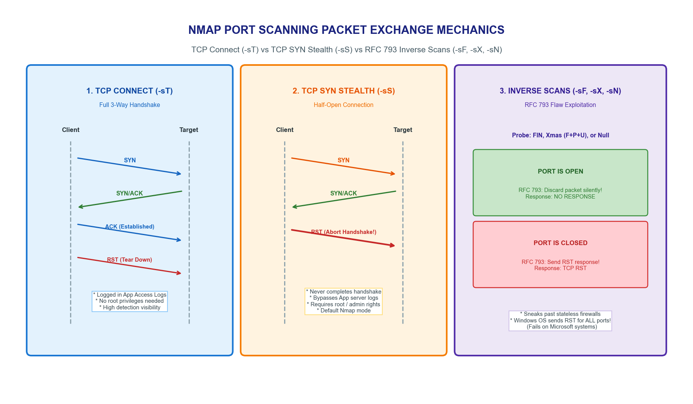
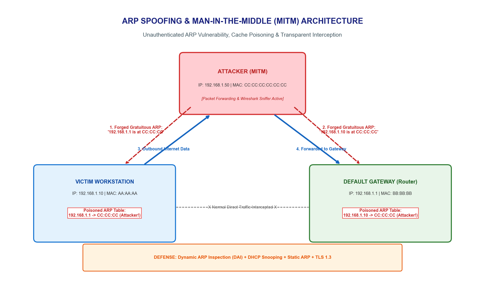
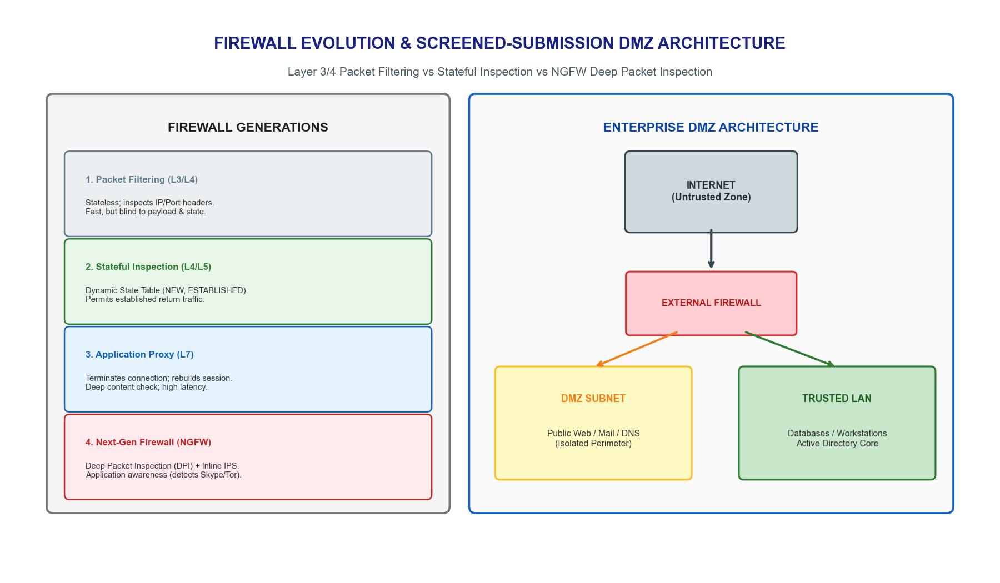

**Target Exam**: 27 Nov 2026 (11:00 AM – 1:00 PM)
**Course Code**: MD*** | **Subject**: Ethical Hacking
**Usage Guide**: Read this in the final 60 minutes before entering the examination hall. It packs 20 high-yield facts, 5 core drawings/formulas, and 5 common exam traps.

1. Risk Equation: $\text{Risk} = \text{Threat} \times \text{Vulnerability} \times \text{Impact}$. A vulnerability without an active threat or exploit poses zero realized risk.
2. CIA Triad & Non-Repudiation:
- Confidentiality $\to$ Encryption (AES-256).
- Integrity $\to$ Hashing (SHA-256).
- Availability $\to$ Redundancy / DDoS mitigation.
- Non-Repudiation $\to$ Asymmetric Digital Signatures (sender cannot deny origination).
3. Hacker Hats:
- White Hat: Fully authorized, defensive, ethical, discovers & reports flaws.
- Black Hat: Unauthorized, malicious, criminal intent, destroys or steals data.
- Grey Hat: Unsolicited probing without authorization; reports to owner or extorts without malicious exploit.
- Suicide Hacker: Seeks catastrophic disruption without regard for personal arrest or penalties.
4. CEH 5 Phases:
$$\text{Reconnaissance} \longrightarrow \text{Scanning \& Enumeration} \longrightarrow \text{Gaining Access} \longrightarrow \text{Maintaining Access} \longrightarrow \text{Clearing Tracks / Reporting}$$
Ethical Hackers NEVER clear tracks—they clean up test artifacts and submit a VAPT Report.
5. Cyber Kill Chain (7 Stages):

$$\text{Recon} \longrightarrow \text{Weaponization} \longrightarrow \text{Delivery} \longrightarrow \text{Exploitation} \longrightarrow \text{Installation} \longrightarrow \text{C2} \longrightarrow \text{Actions on Objectives}$$
6. VAPT Models:
- Black Box: Zero internal knowledge; simulates external untrusted adversary.
- White Box: Full architectural knowledge (source code, configs, diagrams); audits complete surface.
- Grey Box: Partial user knowledge (standard user credentials); simulates insider threat.
7. Indian IT Act 2000 Penalties:
- Section 43: Civil unauthorized access/downloading $\to$ Up to ₹1 Crore compensation.
- Section 66: Criminal hacking $\to$ Up to 3 years imprisonment or ₹5 Lakhs fine.
- Section 66C/D: Identity theft / Phishing by personation $\to$ Up to 3 years + ₹1 Lakh fine.
- Section 66F: Cyber Terrorism $\to$ Life Imprisonment.
8. DNS Zone Transfer (AXFR):
- Query: dig @
- Leaks entire DNS database (all subdomains, IP addresses, TXT tokens) when secondary server replication is unauthenticated. Hardened via BIND allow-transfer { .
9. Nmap Scan Mechanics:

- TCP Connect (-sT): Completes full 3-way handshake (SYN $\to$ SYN-ACK $\to$ ACK). Logged in application layer.
- TCP SYN Stealth (-sS): Half-open (SYN $\to$ SYN-ACK $\to$ RST). Stealthy, unlogged by apps, requires root.
- RFC 793 Inverse Scans (Null, FIN, Xmas): Open port $\to$ No response (Open|Filtered). Closed port $\to$ RST. Fails on Windows because Windows always returns RST.
10. Port States:
- Open: Application listening (SYN-ACK received).
- Closed: No application listening (RST received).
- Filtered: Firewall/ACL blocking or dropping packets (no response or ICMP Type 3 unreachable).
11. Password Spraying vs Credential Stuffing:
- Spraying: 1 common password against thousands of accounts (bypasses per-user lockout).
- Stuffing: Automated replay of breached username/password dumps across different platforms.
12. Salting:
- Concatenates unique random bits $S$ to password $P$: $\text{Hash}(S \mathbin{\Vert} P)$.
- Completely neutralizes Rainbow Tables by destroying deterministic precomputed lookup mappings.
13. ARP Spoofing MITM:

- Exploits ARP's stateless and unauthenticated design (RFC 826). Hosts accept unsolicited/gratuitous ARP replies and overwrite cache.
- Prevented by Layer 2 switch feature: Dynamic ARP Inspection (DAI) via DHCP Snooping binding table.
14. Firewall Generations:

- Gen 1: Stateless Packet Filter (L3/L4 - IP/Port headers only).
- Gen 2: Stateful Inspection (L4/L5 - State connection table ESTABLISHED).
- Gen 3: Application Proxy (L7 - Deep payload proxy).
- Gen 4: Next-Gen Firewall (NGFW - DPI, IPS, TLS decrypt, application awareness).
15. DMZ Fundamental Rule:
- Public servers (Web, Mail, DNS) live in DMZ.
- No connection may ever initiate from DMZ into Internal LAN.
16. SQL Injection Remediation:
- Tautology (' OR '1'='1' --) breaks string literal syntax and comments out password verification.
- Parameterized Prepared Statements structurally eliminate SQLi because the database pre-compiles the query AST; inputs are bound purely as literal data values and cannot modify query logic.
17. XSS Typology:
- Reflected (Type I): Non-persistent, delivered via phishing link/URL query param, affects individual clicker.
- Stored (Type II): Persistent, stored in DB/forum comments, executes against every visitor/admin.
- DOM-based (Type III): Client-side JS flaw modifying DOM directly via eval() or innerHTML.
18. Wi-Fi Protocol Hierarchy:
$$\text{WEP (RC4/CRC-32 - Broken)} \longrightarrow \text{WPA (TKIP - Broken)} \longrightarrow \text{WPA2 (AES-CCMP - 4-Way Handshake / Deauth crack)} \longrightarrow \text{WPA3 (AES-GCMP / SAE Dragonfly - Immune to offline cracking)}$$
19. Windows Security Event Auditing:
- Event ID 4624: Successful Logon.
- Event ID 4625: Failed Logon (monitored for Brute-force & Password Spraying).
- Event ID 4720: User Account Created (monitored for Backdoor Persistence).
20. CVSS v3.1 Qualitative Severity Ranges:
- None: 0.0
- Low: 0.1 – 3.9
- Medium: 4.0 – 6.9
- High: 7.0 – 8.9
- Critical: 9.0 – 10.0 (e.g., Unauthenticated RCE over Network = 9.8 Critical).
$$\text{Cyber Risk} = \text{Threat} \times \text{Vulnerability} \times \text{Impact}$$
$$\text{Salted Password Hash} = \text{Hash}(\text{Salt} \mathbin{\Vert} \text{Password}) \quad (\text{Salt} \ge 128 \text{ bits})$$
+-------------------------------------------------------------------------------+
| 1. RECONNAISSANCE --> Passive OSINT (WHOIS, Shodan, Google Dorking) |
+-------------------------------------------------------------------------------+
|
v
+-------------------------------------------------------------------------------+
| 2. SCANNING --> Nmap port scans (-sS, -sT), Nessus VA, Banner Grab |
+-------------------------------------------------------------------------------+
|
v
+-------------------------------------------------------------------------------+
| 3. GAINING ACCESS --> Exploit vulnerabilities (Metasploit, SQLi, Buffer) |
+-------------------------------------------------------------------------------+
|
v
+-------------------------------------------------------------------------------+
| 4. MAINTAINING ACCESS --> Privilege escalation (SUID, SYSTEM), Lateral pivot |
+-------------------------------------------------------------------------------+
|
v
+-------------------------------------------------------------------------------+
| 5. REPORTING / VAPT --> Ethical cleanup, CVSS v3.1 scores, Actionable fixes |
| (Tracks Cleared) --> [Malicious actors: delete logs / hide backdoors] |
+-------------------------------------------------------------------------------+ [ Internet ]
|
[ External Firewall ]
|
+--------------------+--------------------+
| DMZ Subnet |
| [Web Server] [Mail Gateway] [DNS] |
+--------------------+--------------------+
|
[ Internal Firewall ]
|
+--------------------+--------------------+
| Internal LAN |
| [Database Server] [Active Directory] |
+-----------------------------------------+
Rule: NO connection can initiate from DMZ into LAN!TCP Connect (-sT):
Attacker ──── SYN ────► Target
Attacker ◄── SYN-ACK ── Target
Attacker ──── ACK ────► Target (Established -> Recorded in App Log)
Attacker ── RST-ACK ──► Target
TCP SYN Stealth (-sS):
Attacker ──── SYN ────► Target
Attacker ◄── SYN-ACK ── Target
Attacker ──── RST ────► Target (Torn down before completion -> App never logs) +-----------------------------+
| 1. Preparation |
+-----------------------------+
|
v
+-----------------------------+
| 2. Detection & Analysis |
+-----------------------------+
|
v
+-----------------------------+
| 3. Containment, Eradication|
| & Recovery |
+-----------------------------+
|
v
+-----------------------------+
| 4. Post-Incident Activity |
| (Lessons Learned) |
+-----------------------------+
|
(Continuous Improvement Loop) ───+* The Error: Stating that a Vulnerability Assessment exploits weaknesses to gain shell access.
* The Correction:
- VA is purely diagnostic and non-intrusive: Identifies, inventories, and prioritizes known weaknesses without weaponizing or exploiting them.
- PT is active exploitation: Weaponizes vulnerabilities to safely compromise targets, validate impact, test defense detection, and establish lateral movement.
* The Error: Writing that a FIN scan on a closed Windows port sends nothing back while an open port sends RST.
* The Correction:
- Microsoft Windows does NOT comply with RFC 793.
- On Windows, every port (open or closed) returns RST when probed with invalid flag combinations. Inverse scans only work against RFC 793-compliant stacks (Linux, BSD).
* The Error: Writing that CSRF steals user session cookies via <script> injection.
* The Correction:
- XSS executes arbitrary JavaScript inside the victim's browser context (stealing cookies via document.cookie, rewriting the DOM).
- CSRF does not read cookies or inject script; it forces the victim's browser to submit an unauthorized transaction request to a server where the victim is already authenticated, relying on the browser to automatically attach ambient credentials.
* The Error: Suggesting robots.txt as a security defense to protect admin portals from hackers.
* The Correction:
- robots.txt is an advisory file for polite web crawlers (Googlebot). It does not enforce authentication or access restrictions.
- Putting sensitive folders (Disallow: /secret-admin/) provides attackers with a direct roadmap of sensitive attack vectors. Use web server access controls (.htaccess, IP filtering, LDAP auth) instead.
* The Error: Writing that WPA2 is cracked because AES-128 encryption was broken.
* The Correction:
- AES-CCMP is mathematically solid and unbroken.
- The vulnerability lies in the WPA2 4-Way Handshake exchange: attackers send deauthentication frames to force client reconnection, capture the ANonce, SNonce, and MIC, and then perform offline dictionary cracking against the Pre-Shared Key (PSK) hash.